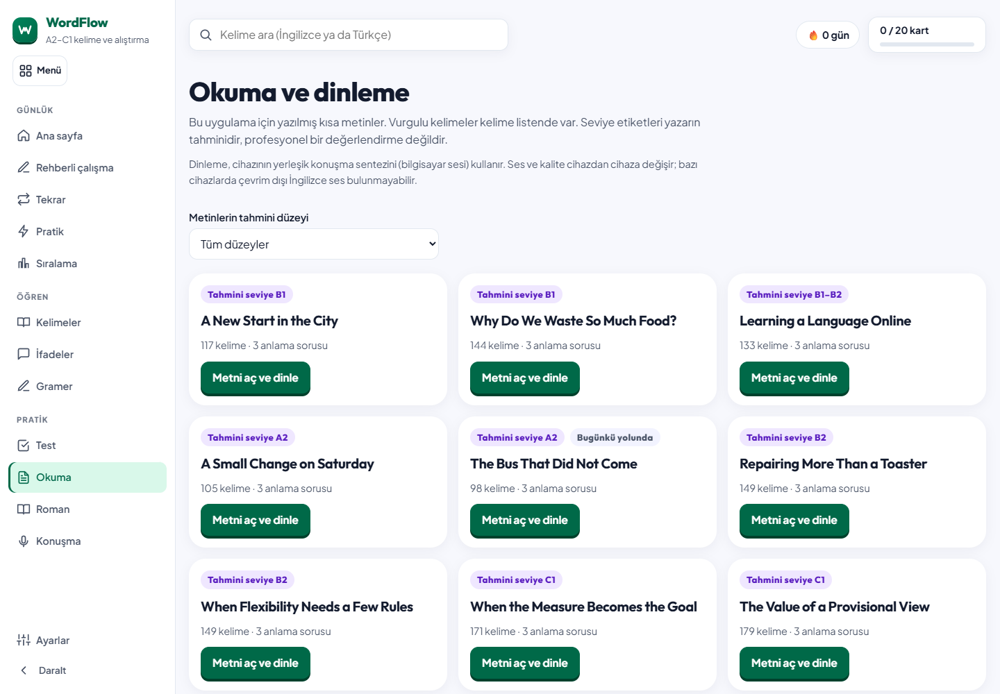

WORDFLOW / 10 KASIM 2026 / 2.8.0
Her gün ne çalışacağını
gösteren bir öğrenme yolu
Canlı site mobil ve masaüstünde incelendi. Genel İngilizce hedefi için mevcut araçlar bir günlük sıraya bağlandı; seçeneklerden cevap seçmenin yanına hatırlayarak yazma ve kendi cümleleriyle üretme eklendi.
5 adımHatırlama, yapı, anlama, üretim ve kontrol
9 metinAltısı yeni · 27 anlama sorusu · düzey filtresi
56 kontrolDört genişlik ve iki temada yatay taşma yok
Canlı tasarımda görülen sorun
Önceki ana sayfada puanlar ve kart sayacı öne çıkıyor, 21 deste uzun bir liste oluşturuyordu. Masaüstünde ana içerik dar bir kolonda kalıyordu. Mobil menü bulunduğu hâlde bir öğrencinin sıradaki çalışması açık değildi. Okuma bölümü üç metinle sınırlıydı.
Yeni ana sayfada ilk ekranda tek bir sıradaki adım var. Süre ve kelime yolu hemen ayarlanabilir. Masaüstünde haftalık özet yan kolonda; tam deste kütüphanesi açılır bir bölümde. Puan görevleri pratik sayfasının ikincil alanına taşındı.
Günlük yol nasıl çalışıyor?
- 1 · HatırlaFarklı kartlara verilen gerçek yanıtlar
- 2 · Yapıyı deneBir gramer dersinin geçen testi
- 3 · AnlaSeçilen metin, dinleme ve anlama soruları
- 4 · AnlatKendi yazın, yerel ses kaydı veya öğretmenle iki gerçek yanıt
- 5 · Geri çağırŞıksız, yazarak kelime hatırlama
Bir sayfayı açmak adımı tamamlamaz. Yanlış ve ipucuyla bulunan cevaplar ilk yardımsız denemeden ayrılır. Yanlış kelime başka kelimelerden sonra yeniden gelir ve tekrar havuzuna alınır. Önceden zorlanılan kelimeler sonraki kontrolün seçiminde dikkate alınır.
Başlangıç süresi 30 dakika; 15 ve 45 dakika da seçilebilir. Kelime yolu, açık bir önceki tercih yoksa A2 ile başlar. Bu bir seviye tespiti değildir; kullanıcı değiştirebilir. Süreler yaklaşık çalışma önerileridir.
Okuma ve üretim birbirine bağlandı
Dokuz metin, tahmini A2–C1 düzeylerine göre filtrelenir. Günlük bağlantı tek bir metni açar; okuma veya dinlemenin ardından aynı konuyu kendi hayatına ya da görüşüne bağlayan bir üretim sorusu gelir. Örnek başlangıçlar yardımcıdır; tamamlanma için öğrencinin kendi metnini yazması gerekir.

Yazma görünümü · Sesli anlatım görünümü · Şıksız hatırlama
Geri bildirim ve kayıt doğruluğu
- Yazma taslakları bu cihazda tutulur, mevcut geri bildirim editörüne aktarılabilir.
- Ses kaydı yalnızca sekmede kalır ve yüklenmez. Mikrofondan ayrılınca izler kapanır; plan değişimi, sıfırlama ve içe aktarmada kayıt temizlenir.
- Ses kaydının süresi bir pratik ölçüsüdür; telaffuz ya da yeterlilik puanı değildir.
- Yapay zekâ öğretmeninin değişiklik sayısından üretilen doğruluk yüzdesi kaldırıldı. Durum satırı gerçek hazır/düşünüyor/dinliyor durumunu gösterir.
- Günlük plan ve gerçek çalışma kayıtları dışa/içe aktarmaya dahil edildi; gün değişimi, bozuk kayıt ve kapalı depolama için güvenli sınırlar var.
- Özgün 2.199 kart, 2.500 gömülü görsel ve karşılaştırılan eski öğrenme veri kümeleri korundu. Yeni metinler ek içeriktir.
Öğretim tasarımının dayanağı
Okuma/dinleme, kendi anlamını üretme, dil biçimlerine dikkat ve akıcılık pratiğini birlikte ele almak, Nation’ın dil kursu tasarımında vurguladığı dengeden yararlanır. Bu sayfadaki dakika dağılımı ise kişiye özel olarak doğrulanmış bir reçete değildir. Paul Nation, Revisiting the Four Strands (2026).
Yazılı hatırlama ve tekrar, hedef kelimeyi yalnızca tanımaktan farklı bir çalışma sağlar. Nakata’nın kelime çifti deneyinde tekrar sıklığı ile harcanan zamanın sonuçları farklı biçimde etkilediği görülür; bu yüzden uygulamadaki belirli sayıda kelimeyi herkes için bilimsel optimum olarak sunmuyoruz. Nakata, Does Repeated Practice Make Perfect? (2017).
Gerçekleştirilen kontroller
| Kontrol | Sonuç |
|---|
| Opening activities does not complete them; daily plan and library hierarchy | Geçti |
| Actual distinct card answers complete recall practice; duplicates do not count | Geçti |
| Passing the real grammar unit test completes the grammar step | Geçti |
| Assigned graded reading opens alone; comprehension requires correct answers | Geçti |
| Writing validation, local draft persistence and feedback handoff | Geçti |
| Typed recall: errors, persistent hints, intervening questions, first-attempt honesty and completion | Geçti |
| Progress export and validated import include the guided study record | Geçti |
| A new local day starts fresh while history and the current plan survive reload | Geçti |
| All four vocabulary paths and three daily durations can be selected | Geçti |
| Reading library presents nine compact, level-filtered texts | Geçti |
| Microphone denial falls back to writing; late permission and active recordings release tracks | Geçti |
| Successful learner turns count as output; AI feedback has no invented accuracy percentage | Geçti |
| Collapsed desktop navigation retains accessible link names | Geçti |
| Both languages, both themes and four viewport widths | Geçti |
| Unavailable storage and standalone file:// guided study | Geçti |
| No uncaught JavaScript errors | Geçti |
Ek olarak mevcut etkileşimli öğrenme, roman okuyucu ve 52 temel ders içeren gramer kursu testleri çalıştırıldı. Kazanılmış XP doluyken mobil başlık taşması düzeltildi; daraltılmış masaüstü menüsünün bağlantı adları ayrıca tarandı.
Yeni akış testleri · Tema taramaları · Canlı site inceleme kaydı · Özet ölçümler
Kontrollerin sınırları
Mikrofon izni/kayıt yaşam döngüsü ve öğretmen yanıtı testleri açık test benzetimleriyle yapıldı. Gerçek mikrofonun ses kalitesi, gerçek ekran okuyucu, iOS/Safari ve öğrenme başarısındaki uzun vadeli değişim ölçülmedi. Yaklaşık 20 MB tek HTML dosyası ağ yükünü hâlâ belirler; bu çalışma bir indirme hızı iyileştirmesi iddiası taşımaz.
Plan, düzenli çalışmayı yönlendirir ve yapılanları kaydeder. Uygulamadaki bir tamamlanma işareti tek başına dil yeterliliği belgesi değildir.